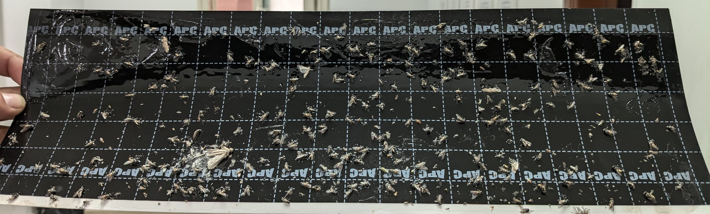
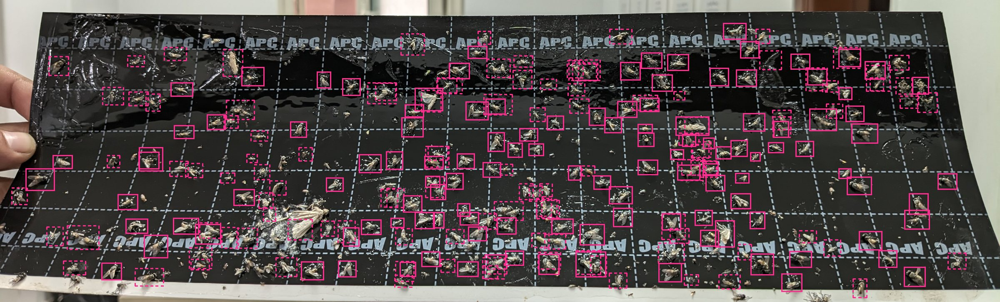
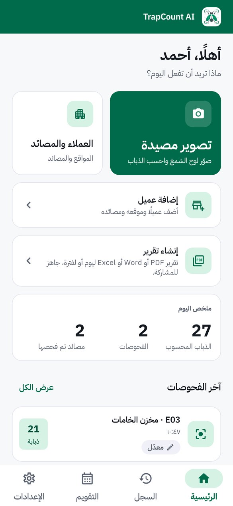
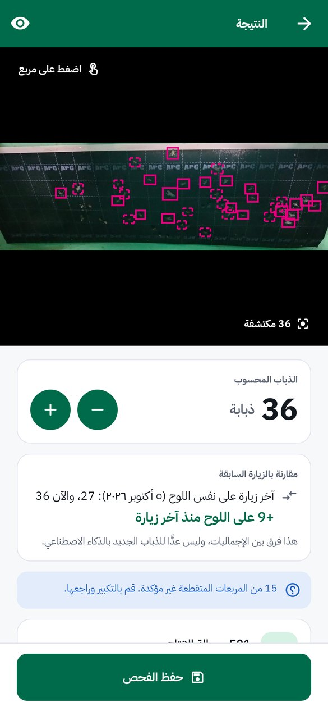
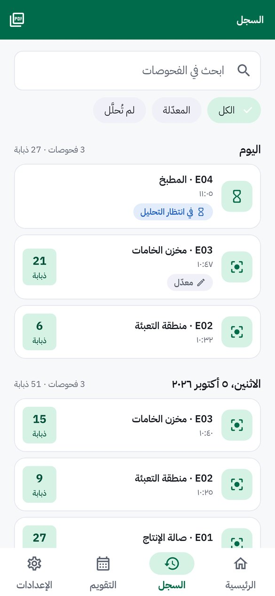
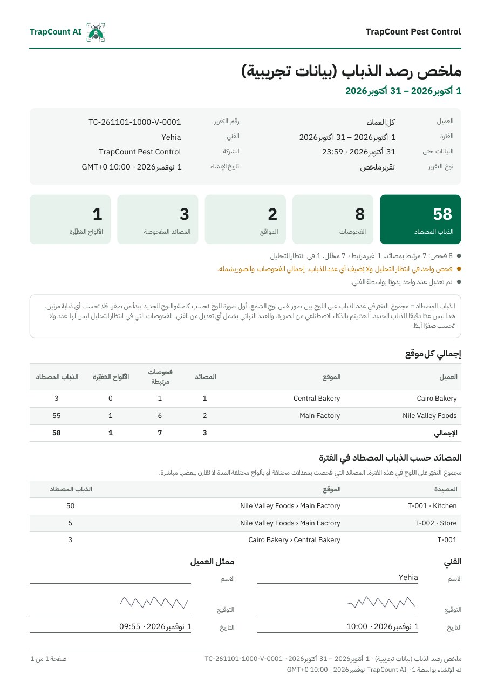
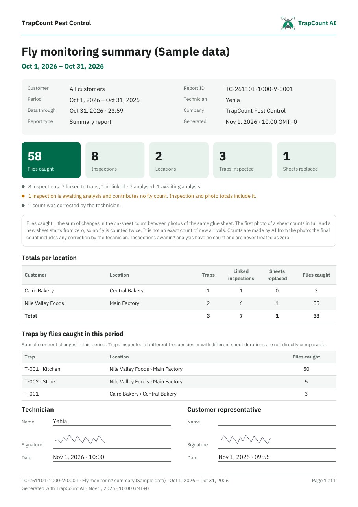

Weak signal on site
The photo waits on the phone and is counted when the connection returns.
For pest-control companies
Technicians photograph the glue board. TrapCount AI marks each fly and adds the count to a signed visit report.


A real board from a customer site, not used in training. Our early model still misses or doubles some flies.
The technician still checks every trap. The counting, the proof and the paperwork get easier.



Real app screens in Arabic, with sample data
Open today's visit, pick the trap, and take a photo of its glue board with the phone camera.
The photo goes to our server. The model draws a box on every fly it finds and sends the count back.
Zoom in on the dashed boxes, correct the count if needed, and save. The trap's history and the visit report update.
Technicians use the Android app on site. Managers and your customers use the same system on the web.
Admins give each visit one customer and one technician. Technicians only see their own visits, so nobody opens the wrong site.
With a map link for each location.
The technician signs on the phone for each visit and each report. Signatures are never reused.
The photo waits on the phone and is counted when the connection returns.
See each trap over time, the change since the last visit, and a trend chart with an average line.
Customers sign in on the web, read the reports for their own sites, and reach you on WhatsApp or by phone.
Set a level for each customer. When a count passes it, the right people get a notification and the visit email goes out.


Real reports from the app, filled with sample data
Your logo, the technician's signature, Arabic or English. Pick one day, a date range, a detailed report, or the visit log.
We would rather show you what works now than quote numbers we have not measured yet.
Visits, traps, photos, signatures, reports.
Accounts, roles, visits, trends, alerts.
Customers read their own reports.
Improves as we train it on more real boards.
Android comes first.
The model is early, so we do not publish an accuracy figure yet. Boxes it is unsure about are dashed, and the technician can zoom in and correct the count before saving. During a pilot we measure it on your own boards.
Counting runs on our server, so it needs a connection. If there is none on site, the photo stays on the phone and is counted when the connection returns.
No. Every company has its own account, and the server keeps each company's customers, traps and visits apart.
No. Each count is the total on the board in the photo. Reports show the change since the last visit, the sheet number, and how many days the sheet has been in use.
Arabic and English, with full right-to-left layout. The field app runs on Android phones. Managers and customers use any web browser.
A pilot runs on a few of your real sites, so you can judge the counts and the reports yourself.